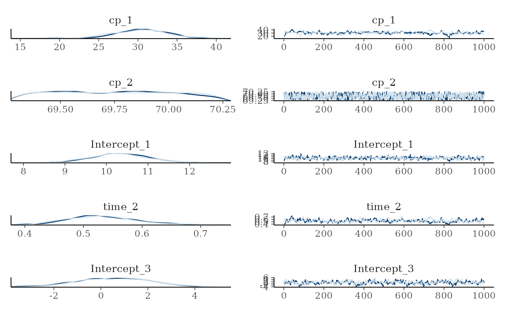
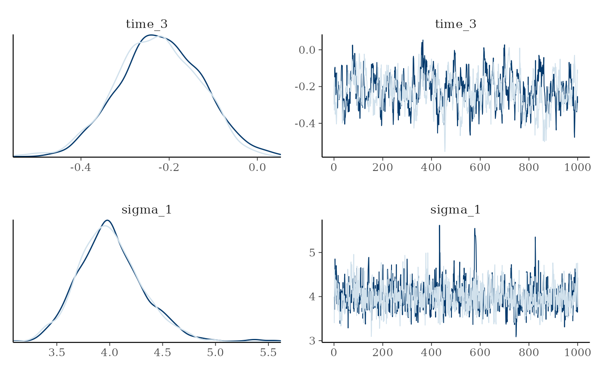
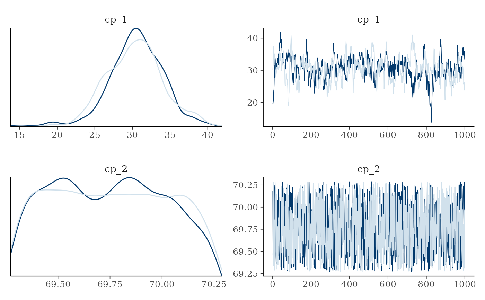
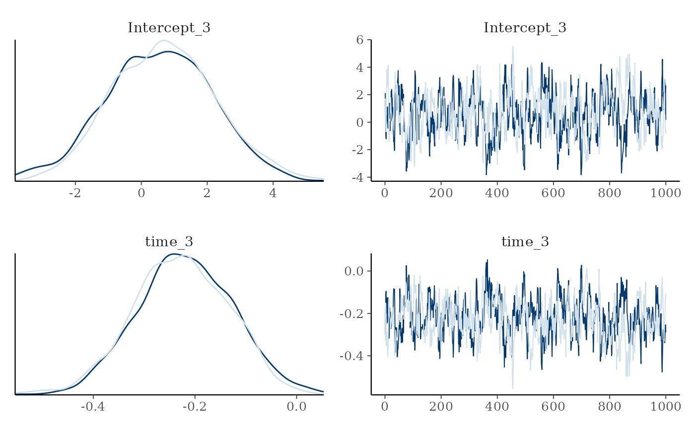
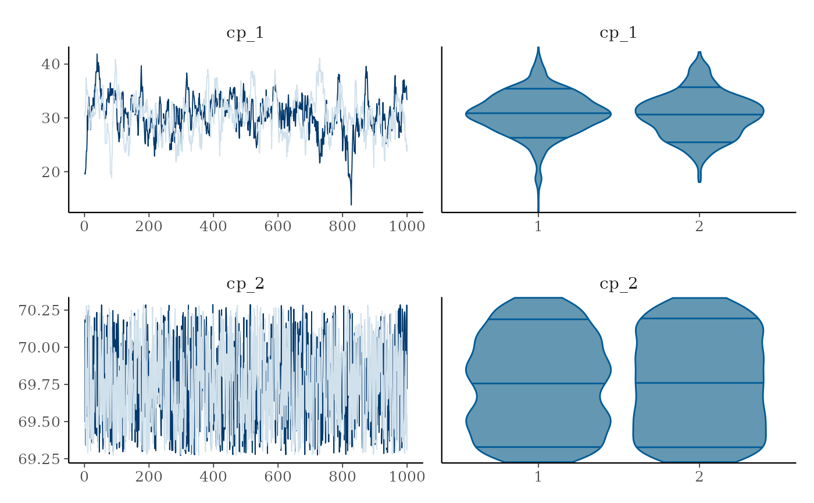
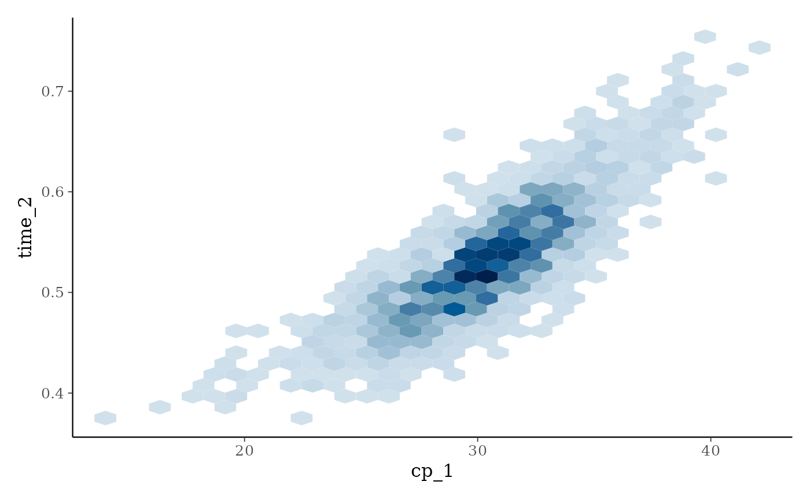
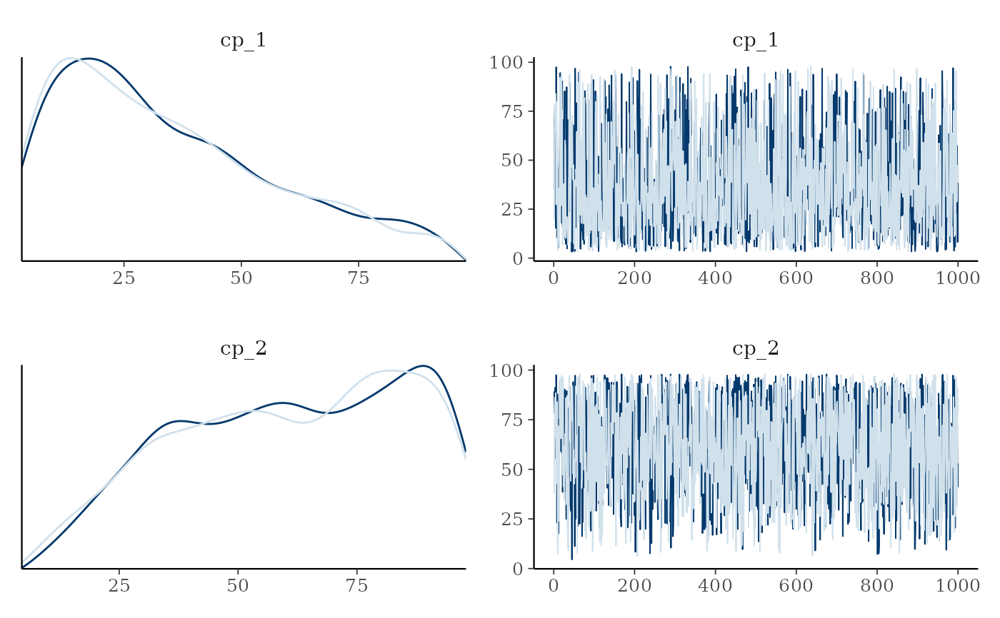
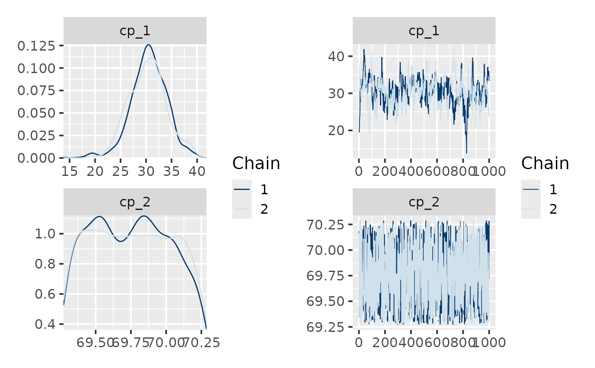

Plot many types of plots of parameter estimates. See examples for typical use cases.
Usage
plot_pars(
fit,
pars = "population",
regex_pars = character(0),
type = "combo",
ncol = 1,
prior = FALSE,
nvariables = 5,
ask = TRUE
)Arguments
- fit
An
mcpfitobject.- pars
Character vector. One of:
Vector of parameter names.
"population"plots all population-level parameters."group"plots all group-level deviations (random effects). To plot a particular group-level effect, useregex_pars = "^name".
- regex_pars
Vector of regular expressions. This will typically just be the beginning of the parameter name(s), i.e., "^cp_" plots all change points, "^my_group_effect" plots all levels of a particular group-level effect, and "^cp_|^my_group_effect" plots both.
- type
String or vector of strings. Calls
bayesplot::mcmc_>>type<<(). Common calls are "combo", "trace", and "dens_overlay". Current options include 'acf', 'acf_bar', 'areas', 'areas_ridges', 'combo', 'dens', 'dens_chains', 'dens_overlay', 'hist', 'intervals', 'rank_hist', 'rank_overlay', 'trace', 'trace_highlight', and 'violin".- ncol
Number of columns in plot. This is useful when you have many parameters and only one plot
type.- prior
Logical. Plot prior draws (
TRUE) instead of posterior draws (FALSE, default)? Useful formcp(..., sample = "both").- nvariables
Positive integer or
NULL/Inf. Maximum number of parameters plotted per page. Set toNULLorInfto plot all parameters on a single page. The default of 5 followsbrms::plot.brmsfit().- ask
Logical. In an interactive session, prompt before printing each page after the first. Only used when there are multiple pages.
Value
A ggplot2 object when all selected parameters fit on one page. For multiple pages, an invisible list of ggplot2 objects.
Details
For other type, it calls bayesplot::mcmc_type(). Use these
directly on coda::as.mcmc(fit) or as_draws(fit) if you want finer
control of plotting, e.g., bayesplot::mcmc_dens(coda::as.mcmc(fit)). There
are also a number of useful plots in the coda package, i.e.,
coda::gelman.plot(coda::as.mcmc(fit)) and coda::crosscorr.plot(coda::as.mcmc(fit))
In any case, if you see a few erratic lines or parameter estimates, this is
a sign that you may want to increase argument 'warmup' and 'iter' in mcp.
Up to nvariables parameters are shown on each page. Multi-page plots are
printed in sequence; in interactive use, ask = TRUE pauses between pages.
Author
Jonas Kristoffer Lindeløv jonas@lindeloev.dk
Examples
# Typical usage. demo_fit is an mcpfit object.
plot_pars(demo_fit)


# \donttest{
# More options
plot_pars(demo_fit, regex_pars = "^cp_") # Plot only change points

plot_pars(demo_fit, pars = c("Intercept_3", "time_3")) # Plot these parameters

plot_pars(demo_fit, type = c("trace", "violin"), regex_pars = "^cp_") # Combine plots

# Some plots only take pairs. hex is good to assess identifiability
plot_pars(demo_fit, type = "hex", pars = c("cp_1", "time_2"))
#> Warning: The following arguments were unrecognized and ignored: facet_args

# Visualize the priors:
plot_pars(demo_fit, prior = TRUE, regex_pars = "^cp_")

# Useful for group-level effects:
# plot_pars(my_fit, pars = "group", ncol = 3) # plot all group-level deviations
# plot_pars(my_fit, regex_pars = "my_group_effect", ncol = 3) # one group-level effect
# pages = plot_pars(my_fit, pars = "group", ask = FALSE)
# pages[[1]] # Inspect or customize one page
# Customize multi-column ggplots using "*" instead of "+" (patchwork)
library(ggplot2)
library(patchwork)
plot_pars(demo_fit, regex_pars = "cp") & theme_gray(15)

# }